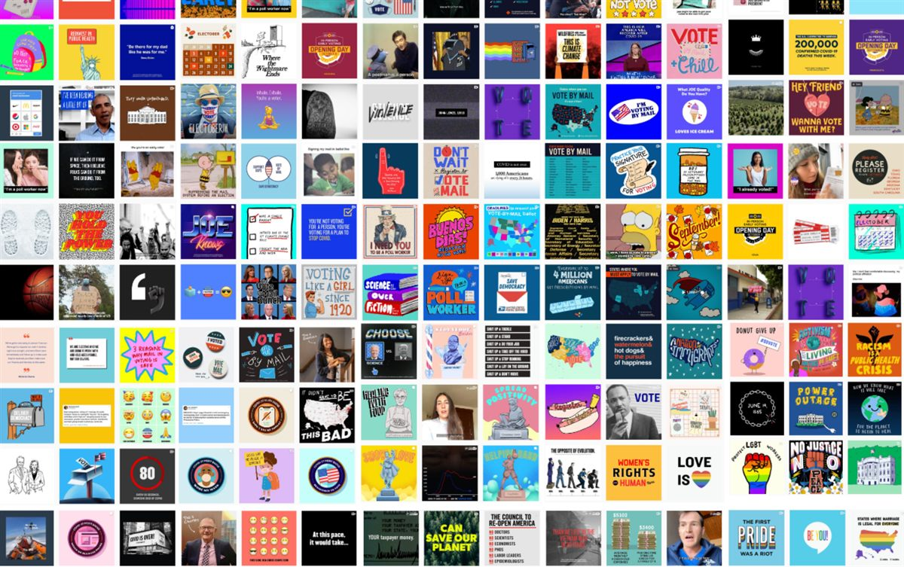
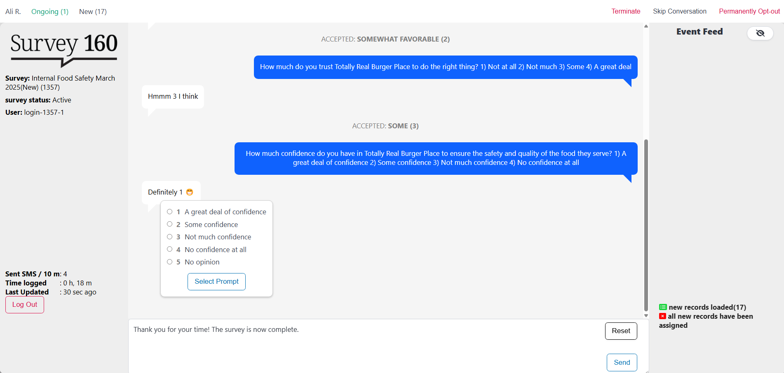
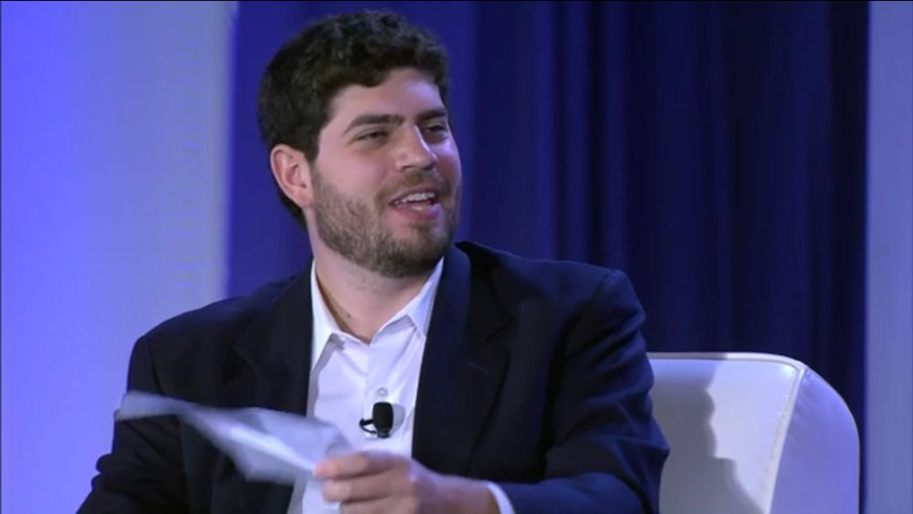
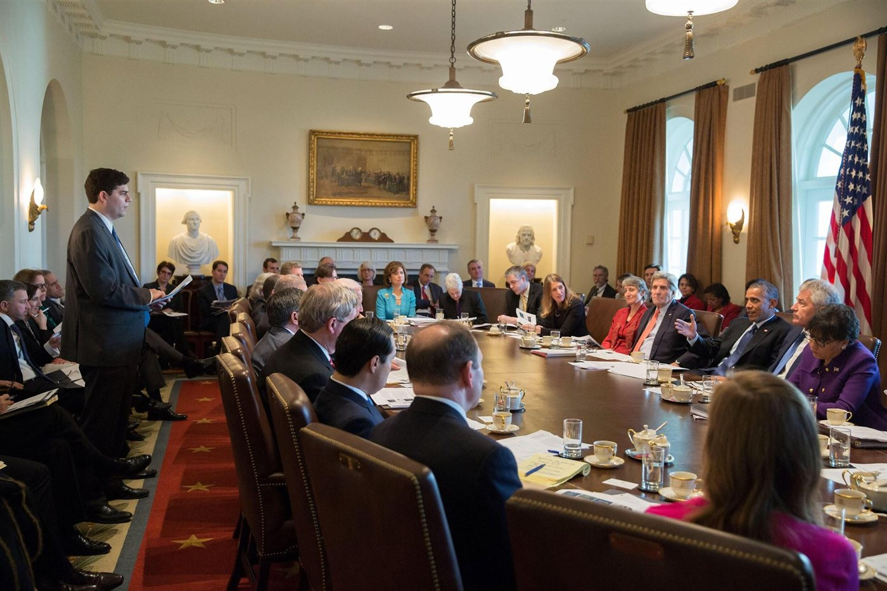

Work
Creating Teams & Companies
Nathaniel launched a boutique strategy and analytics offering designed to achieve two goals: (1) deploy rigorous analysis of the impact of media by looking systematically at correlations and connections across topics and goals over time via meta analysis; and (2) bring new digital creatives into areas they had not previously participated within. Leading experts are bad at guessing in advance what will work and why; our strategy began with that recognition, trying to be humble when designing programs.

Projects have included:
- Developing analytics and strategy infrastructure, including building machine learning models, visualizations, and meta analysis infrastructure for thousands of randomized controlled trials for a Fortune 100 business over a period of five years.
- Conducting original research and production for COVID education, partnering with one of the largest organizations at the time dedicated to accurate public education.
- Building and launching a non-profit team of 13, including raising $4 million and driving $1.5 million in partner revenue, for a new organization (Fellow Americans) which partnered with organizations that collectively spent more than $35 million on distribution.
- Content creation and testing for a $10M+ program for the 2020 Biden for President campaign.
Select coverage of work: The New York Times, Vanity Fair, and Bloomberg.
Survey 160 is a software product designed to overcome the barriers of outdated (but still ubiquitous) polling and research methods. Instead of traditional telephone and panel interview methods, which are increasingly costly and fail to reach many critical audience segments, Survey 160 conducts research using SMS (text) conversation.
Launched in 2018, Survey 160 grew from an incubated research project with Harmony Labs. The company received investment from Higher Ground Labs and New Media Ventures among others, and works with a wide range of corporate, non-profit, academic, and political customers. Projects have included collecting data for more than 20 Fortune 100 companies, research on behalf of the national TV news networks, health research with the Kaiser Family Foundation, and the Biden Campaign.

Some technical details: the software, unique for its class, is designed end-to-end for research purposes. Operating primarily as a managed service, the tool supports open- and closed-ended questions, allows for A/B testing, skip logic and question branching, management of opt-out lists, and built-in quotaing options to ensure coverage within subgroups. Original research has been presented annually at the American Association of Public Opinion Research, among others.
Select coverage of work: The New York Times, Vox, and Bloomberg.
In 2020, Nathaniel created and launched the Better Internet Initiative (BII), a 501(c)(3) non-profit project which helps creators and influencers make educational content for their audiences about issues of importance. The program offers a fellowship for a growing network of creators, programming support, and data and testing.
Based on the success of the 2020 pilot program, BII expanded over time, with the 2024 cohort scaling to more than 100 fellows who produced more than 1,000 videos across a range of topics and issues.
See coverage in WIRED.
Digital Transformation
Expert Witness
In 2024, Nathaniel was contacted by representatives of the office of New Mexico’s Attorney General to provide advice, strategy and support for their work in discovery related to a prominent case, State of New Mexico v. Meta Platforms. That work ultimately expanded to serving as an expert witness on the case, ultimately testifying in May of 2026.
Nathaniel’s expert report (not public), was focused on three areas: (1) understanding the alleged harms caused by the defendant related to children’s health; (2) analyzing relevant litigation and laws for the case; and (3) providing recommendations for abatement and mitigation of harms found in the case.
See: Why New Mexico v. Meta Matters, Tech Policy Press, August 2026, and Attorney General Raúl Torrez Marks Conclusion of Final Phase in Landmark Trial Against Meta.
Consulting
After leaving the White House, Nathaniel launched Lubin Strategies and has consulted for a range of large corporations, startups, non-profits, and foundations. Projects typically focus on some combination of product, strategy, management, or marketing support, often developing new programs from scratch or reimagining opportunities to use technology in new ways.

Projects have included strategic support for a division of Amazon, an audit and recommendations of a product area of Medium, support for Buzzfeed’s sales/news/product teams in support of a new growth strategy in 2016, the writing of a 30-page assessment and set of recommendations for a large foundation which resulted in more than $10 million in new funding (including the subsequent co-administration of a $1 million Innovation Fund), a strategic audit of Yahoo News, a product scoping exercise for the Ford Foundation to improve philanthropic administration, and providing counsel to Precision Strategies, a leading marketing firm.
The White House
From 2013 to 2015, Nathaniel led the Office of Digital Strategy at the White House. During that time, the growing office took on increased responsibility for engagement with the American public, and Administration priorities. These years included events like the launch of healthcare.gov and a government shutdown, as well as major policy rollouts in the 2014 and 2015 states of the union, major partnerships in both the private and public sectors, and major technology development for White House resources as well as the We the People platform, which included a first-of-its kind API for third parties to interact with data.

Outside of the day-to-day responsibilities of managing a team of 20 staffers and contractors, two projects were most meaningful across these two years. First, in the aftermath of the HealthCare.gov rollout, Nathaniel was part of the recovery effort (working with leadership at both HHS and the White House), which culminated in reaching the pre-launch goal of 7 million signups in year one. Second, Nathaniel played a leadership role in the 2014 net neutrality policy process, which culminated in President Obama’s historic announcement in favor of a free and open internet.
Obama for America
From before the launch of President Obama’s campaign in 2011 through its culmination in 2012, Nathaniel built and managed the strategy of the digital marketing team, including staffing and budgets for a team that reached 25, data management and testing, creative development, and innovation. Because of the growth and success of the program, a central challenge was how to scale up paid budgets effectively.
In that capacity, Nathaniel supervised more than $112 million total budget, about 22% of total media resources and close to 10% of all campaign spending, earning the right to set the team’s budgets for multiple campaigns based on return on investment (unprecedented at the time). With the share of that budget dedicated to organizational growth, marketing efforts grew the email list by more than 7 million and raised nearly $150 million at a 500+% return on investment. Outside of fundraising, the team registered 350,000+ voters through online advertising in battleground states and generated 500,000+ polling place lookups in target areas during the last week of the campaign, with optimization programs estimated to have saved $30 million.